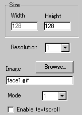
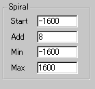
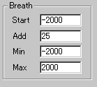

|
This applet can warp/spiralise any GIF or JPG image.
The only requirement is that this image must be sized equally to
one of the powers of 2 (64x64 pixel, or 32x64, 128x128, ...). Changing
parameter values allows you to simulate a "breathing image" effect.
This applet is fully parametrised, so you can generate all kinds
of warp effects.
[For more technical
information about the available parameters, click here.]
Most parameters are self-explanatory and you can
always see brief description of each parameter by moving the mouse
pointer over the wizard.
 |
First, set an image to apply this effect and enter the applet
size (Width, Height) according to the resolution value. "Resolution"
value. "Resolution" is a zooming parameter.
For instance, the value 2 gives twice as large an applet size
as the screen size, while the value 1 changes nothing. Then
you decide if textscroll function is enabled by checking "Enable
textscroll" box.
|
|
We have provided three kinds of warp effect,
which can be selected by "Mode" parameter.
The deform effect comprises two different effects: spiralisation
and breathing.
|
 |
Spiralisation is controlled by
the initial value and increase factor per millisecond; Start
[-10000, 10000] and Add [0, 250]. The total spiralisation
value can be restricted by setting the Min and Max
values. These should be within the rage of [-10000, 10000]. |
 |
In the very similar way, you can configure breathing
parameters:
Start, Min, & Max: [-10000,
10000]
Add: [0, 250]
|
|
|
To deactivate each of the effects, place 0 at a respective
Add parameter.
|
Proceed to the textscroll
menu if you have checked the textscroll box; otherwise go to
the expert menu.
|